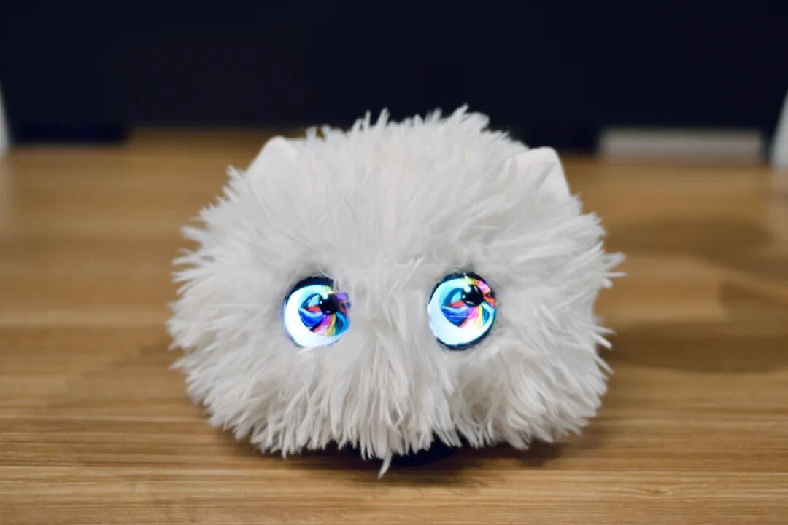
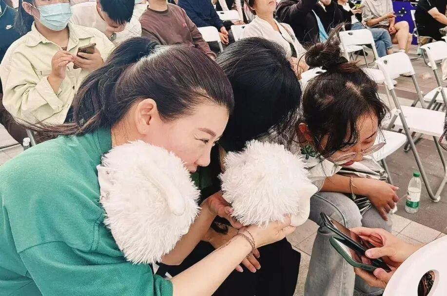
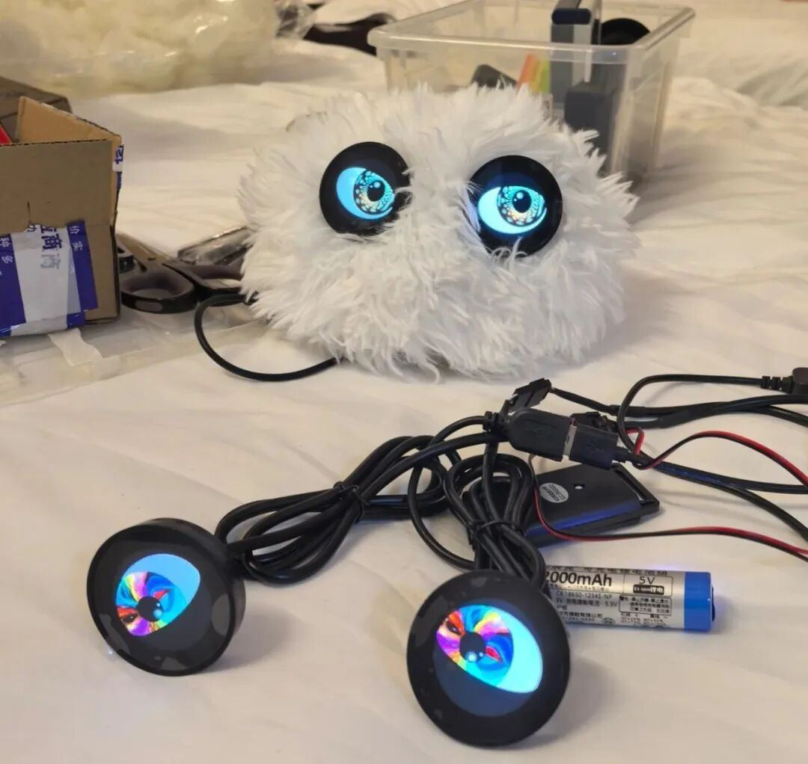
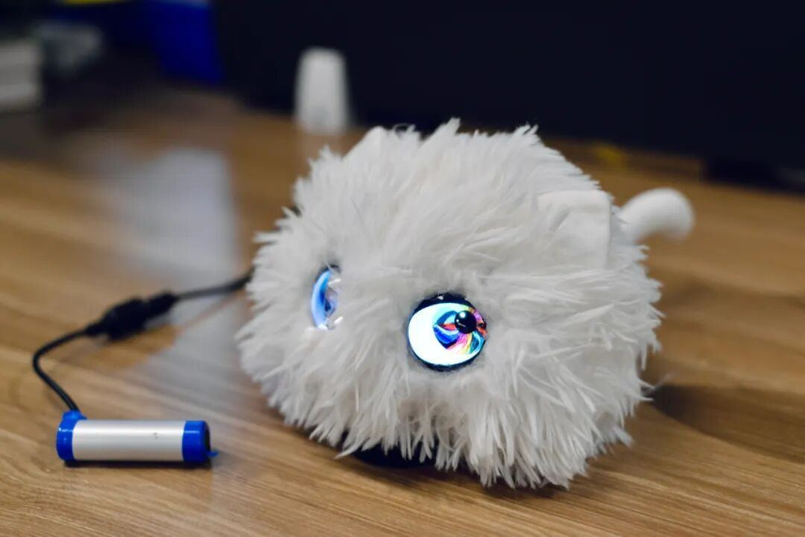

“超级球球”Demo亮相“⽂三×光圈AI TED科技路演”，引发观众围观试⽤“超级球球”是⼀款疗愈级的AI机器⼈，搭载由超级有爱智能科技创业团队研发的⼼理疗愈智能体，可以通过语⾳对话，对⽤⼾的情绪困扰进⾏快速识别、共情、疏导，以解决传统⼼理咨询价格⾼、难预约、咨询预期不确定的市场痛点。

正在进⾏测试的“超级球球”Demo同时，为了给⽤⼾更⽅便愉悦的使⽤体验，“超级球球”还具备⽑绒外观和软萌童声，让⽤⼾仅通过上⼿抚摸、听球球卖萌，即可获得明显的治愈感。

正在进⾏测试的“超级球球”Demo从概念到Demo，实现了0到1，从Demo到量产，是1到100的过程，需补⾜99。这条路⽐想象中有更多挑战，经过四个⽉的努⼒，第⼀批量产的产品预计于今年9⽉交付到⽤⼾⼿中。
⽆论外观，智能体能⼒，还是实际体验上，正式版都会在Demo版基础上有明显升级。
欢迎关注官⽅公众号“超级球球AI疗愈”，获得产品最新动态。
